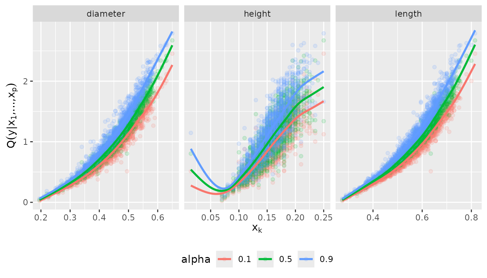

Example usage of the vinereg package
Daniel Kraus and Claudia Czado
September 2017
abalone-example.RmdThis file contains the source code of an exemplary application of the D-vine copula based quantile regression approach implemented in the R-package vinereg and presented in Kraus and Czado (2017): D-vine copula based quantile regression, Computational Statistics and Data Analysis, 110, 1-18. Please, feel free to address questions to daniel.kraus@tum.de.
Data analysis
set.seed(5)We consider the data set abalone from the UCI Machine Learning Repository (https://archive.ics.uci.edu/ml/datasets/abalone) and focus on the female sub-population. In a first application we only consider continuous variables and fit models to predict the quantiles of weight (whole) given the predictors length, diameter, and height.

D-vine regression models
Parametric D-vine quantile regression
We consider the female subset and fit a parametric regression D-vine for the response weight given the covariates len, diameter and height (ignoring the discreteness of some of the variables). The D-vine based model is selected sequentially by maximizing the conditional log-likelihood of the response given the covariates. Covariates are only added if they increase the (possibly AIC- or BIC-corrected) conditional log-likelihood.
We use the function vinereg() to fit a regression D-vine for predicting the response weight given the covariates length, diameter, and height. The argument family_set determines how the pair-copulas are estimated. We will only use one-parameter families and the t copula here. The selcrit argument specifies the penalty type for the conditional log-likelihood criterion for variable selection.
(fit_vine_par <- vinereg(
whole ~ length + diameter + height,
data = abalone_f,
selcrit = "aic"
))## D-vine regression model: whole | length, height, diameter
## nobs = 1306, edf = 20.73, cll = 1092.07, caic = -2142.69, cbic = -2035.41The result has a field order that shows the selected covariates and their ranking order in the D-vine.
fit_vine_par$order## [1] "length" "height" "diameter"The field vine contains the fitted D-vine, where the first variable corresponds to the response. The object is of class "vinecop_dist" so we can use rvineocpulib’s functionality to summarize the model
summary(fit_vine_par$vine)## # A data.frame: 6 x 9
## tree edge conditioned conditioning family rotation parameters df tau
## 1 1 1 1, 2 gumbel 180 5.1 1 0.80
## 2 1 2 2, 4 gumbel 180 2.3 1 0.57
## 3 1 3 4, 3 gumbel 180 2.4 1 0.58
## 4 2 1 1, 4 2 t 0 0.45, 15.34 2 0.30
## 5 2 2 2, 3 4 t 0 0.91, 4.59 2 0.74
## 6 3 1 1, 3 4, 2 t 0 0.32, 8.26 2 0.20We can also plot the contours of the fitted pair-copulas.
contour(fit_vine_par$vine)
Estimation of corresponding conditional quantiles
In order to visualize the predicted influence of the covariates, we plot the estimated quantiles arising from the D-vine model at levels 0.1, 0.5 and 0.9 against each of the covariates.
# quantile levels
alpha_vec <- c(0.1, 0.5, 0.9) We call the fitted() function on fit_vine_par to extract the fitted values for multiple quantile levels. This is equivalent to predicting the quantile at the training data. The latter function is more useful for out-of-sample predictions.
pred_vine_par <- fitted(fit_vine_par, alpha = alpha_vec)
# equivalent to:
# predict(fit_vine_par, newdata = abalone.f, alpha = alpha_vec)
head(pred_vine_par)## 0.1 0.5 0.9
## 1 0.6566404 0.7600777 0.8732930
## 2 0.6826232 0.7860793 0.9030473
## 3 0.6619665 0.7761776 0.8924301
## 4 0.7623574 0.8732517 0.9930074
## 5 0.5812488 0.6890085 0.8231926
## 6 0.6600225 0.7663916 0.8852769To examine the effect of the individual variables, we will plot the predicted quantiles against each of the variables. To visualize the relationship more clearly, we add a smoothed line for each quantile level. This gives an estimate of the expected effect of a variable (taking expectation with respect to all other variables).
plot_effects(fit_vine_par)## `geom_smooth()` using method = 'gam' and formula 'y ~ s(x, bs = "cs")'
The fitted quantile curves suggest a non-linear effect of all three variables.
Comparison to the benchmark model: linear quantile regression
This can be compared to linear quantile regression:
pred_lqr <- pred_vine_par
for (a in seq_along(alpha_vec)) {
my.rq <- quantreg::rq(
whole ~ length + diameter + height,
tau = alpha_vec[a],
data = abalone_f
)
pred_lqr[, a] <- quantreg::predict.rq(my.rq)
}
plot_marginal_effects <- function(covs, preds) {
cbind(covs, preds) %>%
tidyr::gather(alpha, prediction, -seq_len(NCOL(covs))) %>%
dplyr::mutate(prediction = as.numeric(prediction)) %>%
tidyr::gather(variable, value, -(alpha:prediction)) %>%
ggplot(aes(value, prediction, color = alpha)) +
geom_point(alpha = 0.15) +
geom_smooth(method = "gam", formula = y ~ s(x, bs = "cs"), se = FALSE) +
facet_wrap(~ variable, scale = "free_x") +
ylab(quote(q(y* "|" * x[1] * ",...," * x[p]))) +
xlab(quote(x[k])) +
theme(legend.position = "bottom")
}
plot_marginal_effects(abalone_f[, 1:3], pred_lqr)
Nonparametric D-vine quantile regression
We also want to check whether these results change, when we estimate the pair-copulas nonparametrically.
(fit_vine_np <- vinereg(
whole ~ length + diameter + height,
data = abalone_f,
family_set = "nonpar",
selcrit = "aic"
))## D-vine regression model: whole | diameter, length
## nobs = 1306, edf = 153.82, cll = 1112.1, caic = -1916.56, cbic = -1120.61contour(fit_vine_np$vine)
Now only the length and height variables are selected as predictors. Let’s have a look at the marginal effects.
plot_effects(fit_vine_np, var = c("diameter", "height", "length"))## `geom_smooth()` using method = 'gam' and formula 'y ~ s(x, bs = "cs")'
The effects look similar to the parametric one, but slightly more wiggly. Note that even the diameter was not selected as a covariate, it’s marginal effect is captured by the model. It just does not provide additional information when height and length are already accounted for.
Discrete D-vine quantile regression
To deal with discrete variables, we use the theory which is developed in Nagler (2017) and applied to D-vine quantile regression in Schallhorn et al. (2017). For the estimation the discrete variable(s) are transformed to continuous ones by jittering.
We let vinereg() know that a variable is discrete by declaring it ordered.
abalone_f$rings <- as.ordered(abalone_f$rings)
(fit_disc <- vinereg(
rings ~ .,
data = abalone_f,
family_set = "nonpar",
selcrit = "aic"
))## D-vine regression model: rings | shell, shucked
## nobs = 1306, edf = 106.88, cll = -2789.9, caic = 5793.57, cbic = 6346.63plot_effects(fit_disc)## `geom_smooth()` using method = 'loess' and formula 'y ~ x'
References
Kraus and Czado (2017), D-vine copula based quantile regression, Computational Statistics and Data Analysis, 110, 1-18
Nagler (2017), A generic approach to nonparametric function estimation with mixed data, arXiv preprint
Schallhorn, Kraus, Nagler and Czado (2017), D-vine quantile regression with discrete variables, arXiv preprint